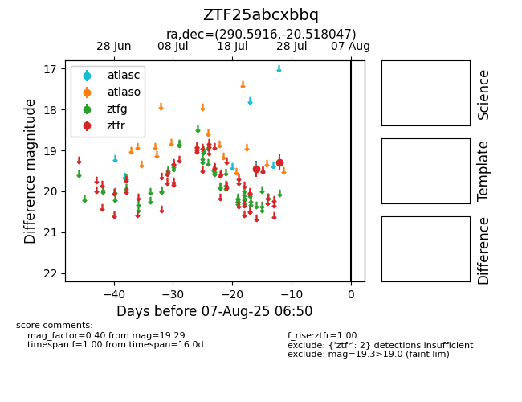

Target ZTF25abcxbbq at 2025-08-07 07:30, see:
FINK: fink-portal.org/ZTF25abcxbbq
Lasair: lasair-ztf.lsst.ac.uk/objects/ZTF25abcxbbq
ALeRCE: alerce.online/object/ZTF25abcxbbq
alt names
ZTF25abcxbbq (ztf,fink)
coordinates:
equatorial (ra, dec) = (290.5916,-20.51805)
galactic (l, b) = (17.5974,-15.78144)
photometry
last ztfr=19.29
2 ztfr detections
